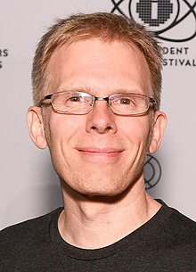

Programmers worth knowing

Linus is a Finnish-American software engineer who is the creator and, historically, the principal developer of the Linux kernel, which is the kernel for Linux operating systems (distributions) and other operating systems such as Android and Chrome OS. He also created the distributed version control system Git and the scuba dive logging and planning software Subsurface.

Guido is a Dutch programmer best known as the creator of the Python programming language, for which he was the "Benevolent dictator for life" (BDFL) until he stepped down from the position in July 2018. He is currently a member of the Python Steering Council, however he has withdrawn from nominations for the 2020 Python Steering Council.

John is an American computer programmer, video game developer and engineer. He co-founded the video game company
id Software and was the lead programmer of its games Commander Keen, Wolfenstein 3D, Doom, Quake, and their sequels. Carmack made innovations in 3D computer graphics, such as his Carmack's Reverse algorithm for shadow volumes. In 2013, he resigned from id to work full-time at Oculus VR, where he served as CTO and later Consulting CTO in 2019.

Richard Matthew Stallman, often known by his initials, rms, is an American free software movement activist and programmer. He campaigns for software to be distributed in a manner such that its users receive the freedoms to use, study, distribute, and modify that software. Software that ensures these freedoms is termed free software. Stallman launched the GNU Project, founded the Free Software Foundation, developed the GNU Compiler Collection and GNU Emacs, and wrote the GNU General Public License.